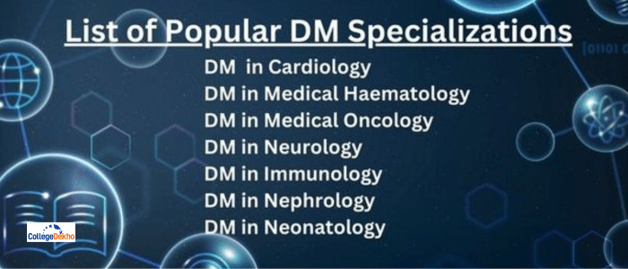

- We’re on your favourite socials!


DM Course
 Save
Save Request a callback
Request a callback Ask us
Ask us
Doctorate of Medicine (DM) is a 3 year super speciality degree, designer for students who want to complete their research or doctorate degree in medical studies. The course curriculum of Doctorate of Medicine includes theoretical knowledge along with clinical and practical skills. Some of the common specializations offered in DM are Medical Oncology, Cardiology, Immunology, and Neurology. The course fee for Doctorate of Medicine usually ranges between INR 20,000 to INR 15 LPA, depending on the type of medical institutions.
DM (Doctorate of Medicine) Course Overview
The full form of DM course is a Doctorate of Medicine (DM) which is a super speciality programme that is pursued by students who want to complete their research or doctorate degree in medical studies. The total duration of the DM course is 3 years. Completing a DM course enables candidates to gain theoretical knowledge along with clinical and practical skills. Aspirants develop the correct approach and attitude for communicating correct medicinal information while being trained for research methodology. In order to apply for a DM course, applicants must finish their postgraduate degree in a relevant subject. The admission process for the DM course includes passing entrance examinations like AIIMS SS, PGIMER, NEET SS, JIPMER, etc. Interested candidates are advised to take a quick glance at the DM syllabus to understand the gist of the course structure. Some of the popular specializations taken up by students of DM degree courses are Medical Oncology, Cardiology, Immunology, and Neurology.
The course cannot be pursued online or via distance learning, therefore, aspirants have to study in a classroom setup to complete the programme successfully. Usually, candidates who make it to the top government DM colleges are eligible for a higher amount of stipend from the government. Top colleges such as CMC Vellore, Bangalore, St Johns Medical College, AIIMS New Delhi, MS Ramaiah Medical College, KMC Manipal, Bangalore, AFMC Pune, New Delhi, IMS BHU, Maulana Azad Medical College, Grant Medical College, Mumbai, etc. grant admission to the DM course. The course fee ranges between INR 20,000 to INR 15 LPA. All the candidates completing the Doctorate of Medicine can create a bright career as a Clinical pharmacologists. Immunologist, Endocrinologist, Cardiologist, Gastroenterologist, Clinical Hematologist, Neuro-radiologist, Oncologist, Physician, Neonatologist, Nephrologist, Geneticist, etc.
Table of Contents
- DM (Doctorate of Medicine) Course Overview
- Doctorate of Medicine Course Highlights
- Why Study Doctorate of Medicine?
- List of popular Doctorate of Medicine courses/ specialisations
- Types of Doctorate of Medicine Course
- Doctorate of Medicine Course Eligibility Criteria
- Doctorate of Medicine Admission Process
- Doctorate of Medicine Entrance Exams
- Difference between Doctorate of Medicine (DM) and Doctor of Medicine Degree (MD)
- Doctorate of Medicine Top Colleges in India
- Doctorate of Medicine Course Fees
- DM Core Subjects and Syllabus
- Doctorate of Medicine Scope in India
- Career Options and Job Prospects after Doctorate of Medicine
- FAQs about DM
Doctorate of Medicine Course Highlights
A Doctorate of Medicine course is one of the most competitive courses in terms of the eligibility criteria required to be fulfilled by candidates. Here is a quick look at the highlights of the Doctorate of Medicine program:
| Course Level | Doctorate |
|---|---|
| Course duration | 3 years |
| Eligibility criteria | State government conducts a competitive exam, merit on the basis of national level centralised competitive test, a minimum score of 50% for general candidates and 40% for SC, ST and OBC candidates in the DM exam. |
| Admission process | Entrance exams like NEET SS, AIIMS SS, JIPMER exam, PGIMER |
| Average course fee | INR 2000 to INR 20 LPA |
| Average salary | INR 10 LPA and above |
| Top colleges offering Doctorate of Medicine courses in India | CMC Vellore, St Johns Medical College, Bangalore, AIIMS New Delhi, KMC Manipal, MS Ramaiah Medical College, Bangalore, AFMC Pune, IMS BHU, Maulana Azad Medical College, New Delhi, Grant Medical College, Mumbai, VIMS Bangalore, DYPMC Pune, BMCRI Bangalore, JIPMER Puducherry, SMT NHL Municipal Medical College Ahmedabad, SRMCRI Chennai, IPGMER Kolkata. |
| Common job positions | Clinical pharmacologist. Endocrinologist, Immunologist, Cardiologist, Clinical Haematologist, Gastroenterologist, Neuro-radiologist, Physician, Oncologist, Neonatologist, Geneticist, Nephrologist. |
Why Study Doctorate of Medicine?
Mentioned below are some of the important points that indicate why a student should pursue a Doctorate of Medicine course:
- DM course graduates acquire a profound knowledge of the theoretical, clinical and practical aspects of the field, as well as earn a positive communication attitude, and well research methodological training through the course program.
- The aim of the course is to provide a detailed insight of the how's and what's for preparing candidates to diagnose and handle any situation of their specialty with ease.
- Doctorate of Medicine is a super specialization course that can be pursued by students who are interested in digging deeper into the field of Medicine.
- Some of the important specialties of the same include Cardiology, Nephrology, Rheumatology, Gastroenterology, Neurology, Paediatrics, Cardiology, etc.
- After successfully completing a course in Doctorate of Medicine, a student may opt for a career opportunity in the Medical Schools, Hospitals or Nursing Homes, etc.
- All students who have completed their basic education (Undergraduate) in Medicine can pursue a postgraduate degree in Doctorate of Medicine. The duration of the course is 3 years.
List of popular Doctorate of Medicine courses/ specialisations
There are various popular Doctorate of Medicine courses depending on the DM subjects. Take a look here:
| DM in Cardiology | DM in Clinical Pharmacology |
|---|---|
| DM in Clinical Haematology | DM in Immunology |
| DM in Medical Gastroenterology | DM in Medical Genetics |
| DM in Medical Oncology | DM in Neonatology |
| DM in Nephrology | DM in Neurology |
| DM in Neuro-Radiology |

Types of Doctorate of Medicine Course
There are two types of Doctorate of Medicine courses:
Full time Doctorate of Medicine Courses -
A full time DM degree is continued for a period of 3 years. Here we have accumulated all the crucial features of the degree:
- A full time DM degree is provided by the Faculty of Medicine in India.
- Candidates can also choose to get admission to full-time DM courses in foreign countries.
- The course curriculum of a full time DM course includes offline classes, attending seminars, conferences, and practical classes.
- In some cases, a full time DM course may take 4 years to complete.
- Full time DM courses are taken up by students who can devote their entire time in studies.
Part Time Doctorate of Medicine Courses -
- A part time DM course is usually taken up by working professionals who want to upskill their careers and knowledge.
- The course curriculum of a part time DM course is usually flexible compared to a full time DM degree course.
- A part time DM course is currently not yet introduced in India but is available in foreign countries.
- The syllabus of a part time DM course is similar to a full time DM degree but the duration of the classes are less.
- The total duration of part time DM course is 4 years.
Doctorate of Medicine Course Eligibility Criteria
The DM degree is one of the most ambitious degrees and is only awarded to the most deserving and meritorious candidates. Here are the eligibility criteria for a Doctorate of Medicine:
- Doctors who are MDs are eligible to apply for the course and the academic merit of students is considered to be the most important criteria for Doctorate of Medicine admission.
- Marks scored by candidates in the competitive exams (general candidates a minimum of 50% and SC/ST/OBC a minimum of 40%) conducted by the state government or similar conducting bodies appointed by the state government. Universities also appoint a body for conducting exams.
- Centralised competitive tests at the National level
- Candidates who have completed from the same university can be allowed Doctorate of Medicine admission on the basis of the first two along with the MBBS exam performance
- Non-government institutes have the option of filling half of their seats and the other half is filled by the management. But this is also done on the basis of merit.
Who Should Pursue Doctorate of Medicine?
Students who wish to specialize in practical training along with advanced Diagnostic, Therapeutic, and laboratory methods should pursue a Doctorate in Medicine. The specialization requires knowledge pertaining to it, however, while in some cases specificity is not required for MD/MS in a specific subject (DM in Medical Genetics), prerequisite DM in the related subject is required in some specializations. It is usually advised for students who are diligent about their specific choice of branch to specialize in, to pursue a career in Doctorate in Medicine to ensure a brighter future ahead.
Skill-sets Required for Doctorate of Medicine
In order to gain a Doctorate in Medicine degree, candidates need some particular skill sets. Take a look at the skills required to successfully earn a DM degree and have an amazing career:
| Skills | Description |
|---|---|
| Problem-solving skills | As doctors, the primary skill that one needs to possess is the capability of solving problems. You might need to do some out-of-the-box thinking in order to find out the cause of the disease as not all presentations are very clear. Additionally, treating kids comes with its own challenges as they are not always good with communication. |
| Teamwork | More often doctors will find themselves working in teams with other doctors and with people from various disciplines. So the importance of working in teams and collaborating with people is crucial as a doctor. |
| Paying attention to details | A good doctor is mindful of all details. In spite of having busy schedules and workloads, treating every patient with the same level of attention and not neglecting any patients in the process. |
| Decision-making skills | Doctors need to make decisions and having a logical, analytical personality is very important. It helps them to rely on data and test results to make the best decision. Making quick decisions while remaining calm and professional is crucial for doctors. |
| Professionalism | Medical professionals have the responsibility of treating all patients in a courteous manner. One has to show emotional maturity while interacting with patients. It is the professionalism of doctors that makes them exceptional at their jobs. |
| Leadership skills | As doctors, there might be a time in life when you would need to take up a leadership role. So being confident with your role and responsibility when required while being empathetic will help you bring out the best in your team. |
| Communication skills | While building one’s career as a doctor, you will be interacting with people from all walks of life. Again medicine is a complex subject that needs to be communicated clearly with patients when explaining symptoms, diagnosis, and plans for treatment. So it is important to inculcate strong communication skills for building effective relationships with colleagues and patients. |
Doctorate of Medicine Admission Process
Doctorate of Medicine is a course that is only ideal for highly meritorious students. The candidate needs to have an MD degree and pass entrance exams. The process of admission is strictly based on academic merit and various entrance exams like NEET SS, AIIMS SS, JIPMER exam, and PGIMER exam.
- The DM Course admission process across several institutes is primarily based on the merit secured at their individual entrance exams.
- While some institutes consider ranks secured in State/National level entrance exams, candidates are further provided with options to choose their desired institution in the counseling process.
- Candidates need to check the details of the entrance exam in which they’re interested to apply for the registration process.
- After that, they’ll receive the exam dates, syllabus, etc. on their registered e-mail/ contact no. Post the successful completion of the entrance exam, candidates who qualify with the required cutoff/rank will be deemed eligible to apply to the college of their choice.
- Counseling Processes are then initiated by the authorities to carry forward the seat-allotment in the institution.
Doctorate of Medicine Entrance Exams
As part of the DM admission process, students have to sit for the entrance test that is conducted both at the national and state levels.
| Exam | Date | Details |
|---|---|---|
| NEET SS | TBA |
|
| INI SS | TBA |
|
| INI CET | TBA |
|
Difference between Doctorate of Medicine (DM) and Doctor of Medicine Degree (MD)
The Doctorate of Medicine and Doctor of Medicine degrees are often confused with each other but there are some major differences between them.
| Parameters | Doctor of Medicine (MD) | Doctorate of Medicine (DM) |
|---|---|---|
| Degree type | Post Doctorate | Post graduate |
| Duration | 3 years | 3 years |
| Eligibility | MBBS | MD |
| Colleges | AIIMS New Delhi, PGIMER Chandigarh, JIPMER Pondicherry, King George’s Medical College | CMC Vellore, St Johns Medical College, Bangalore, AIIMS New Delhi, KMC Manipal, MS Ramaiah Medical College, Bangalore, AFMC Pune, IMS BHU |
Doctorate of Medicine Top Colleges in India
Here is the list of the top Doctorate of Medicine colleges in India course:
| CMC Vellore | St Johns Medical College, Bangalore |
|---|---|
| AIIMS New Delhi | MS Ramaiah Medical College, Bangalore |
| KMC Manipal | Maulana Azad Medical College, New Delhi e |
| IMS BHU | SRMCRI Chennai |
| AFMC Pune | Grant Medical College, Mumbai |
| VIMS Bangalore | SMT NHL Municipal Medical College Ahmedabad |
| DYPMC Pune | JIPMER Puducherry |
| BMCRI Bangalore | IPGMER Kolkata |
Doctorate of Medicine Course Fees
The duration of a Doctorate of Medicine is three years and below is the list of Doctorate of Medicine fees for various specialisations:
| TitleCourse | AverageFeeCourse |
|---|---|
| Cardiology | INR 5,000 - INR 10 LPA |
| Clinical Haematology | INR 50,000 - INR 1 LPA |
| Clinical Pharmacology | INR 30,000 - INR 3.2 LPA |
| Endocrinology | INR 10,000 - INR 15 LPA |
| Immunology | INR 25,000 - INR 2.4 LPA |
| Medical Gastroenterology | INR 10,000 - INR 7 LPA |
| Medical Genetics | INR10 LPA - INR 15 LPA |
| Medical Oncology | INR 50,000 - INR 2 LPA |
| Neonatology | INR 30,000 - INR 1 LPA |
| Nephrology | INR 5,000 - INR 20 LPA |
DM Core Subjects and Syllabus
Here is a comprehensive view of some of the core subjects that are covered under the DM degree programme:
| Virology | Pulmonary medicine | Pulmonary medicine and critical care |
|---|---|---|
| Paediatrics gastroenterology | Paediatrics cardiology | Paediatrics oncology |
| Paediatrics nephrology | Paediatrics hepatology | Organ transplant anaesthesia and critical care |
| Oncology | Neurology | Neuro-radiology |
| Neuro-anaesthesia | Nephrology | Neonatology |
| Medical genetics | Medical gastroenterology | Infectious diseases |
| Immunology | Hepatology | Haematology pathology |
| Geriatric mental health | Endocrinology | Critical care medicine |
| Clinical pharmacology | Clinical immunology | Clinical haematology |
| Child and adolescent psychiatry | Cardiology | Reproductive medicine |
The syllabus of the DM course varies depending on the specialization that is opted for by the candidates. However, we have presented the syllabus of the DM course that is followed in the case of every specialization:
| Semester I | ||
|---|---|---|
| Diseases with reference to General Medicine | Applied basic science knowledge | Recent Advances in Medicine |
| Semester II | ||
| Diagnostic investigation and procedures | Biostatistics and clinical epidemiology | - |
| Semester III | ||
| Ability to teach undergraduate students | Counselling patients and relatives | Monitoring seriously ill patients |
| Semester IV | ||
| OPD patient management | Ward patient management | Ability to carry out research |
| Semester V | ||
| Ward rounds, case presentations | Long and short topic presentations | Clinico-radiological conferences |
| Semester VI | ||
| Journal conferences | Research review | PG case presentation skills |
Doctorate of Medicine Scope in India
After successfully completing the Doctorate of Medicine candidates can work in these areas:
- Hospitals
- Laboratories
- Medical colleges
- Biomedical companies
- Polyclinics
- Non-profit organisations
- Health centres
- Private practice
- Nursing homes
- Research institutes
- Pharmaceutical and Biotechnological companies
Career Options and Job Prospects after Doctorate of Medicine
Candidates after the completion of the Doctorate of Medicine degree have a lot of prospects and opportunities to choose from:
| Clinical Pharmacologist. | Endocrinologist. |
|---|---|
| Immunologist. | Cardiologist. |
| Clinical Haematologist. | Gastroenterologist. |
| Neurologist. | Neuro-radiologist. |
| Physician. | Oncologist. |
| Neonatologist. | Geneticist. |
| Nephrologist. |
Doctorate of Medicine Salary
The average salary for a Doctorate of Medicine specialisation depends on some important factors like experience and specialisation. The choice of career path in terms of a government and private hospital and a government hospital along with a private clinic also dictates the salary of doctors with a DM degree. But on average, the salary range lies between INR 1.5 LPA to 30 LPA.
FAQs about DM
What is the scope of doing DM or Fellowship in Infectious diseases in India?
Eligibility for a Doctorate of Medicine in Infectious Disease in India is:
M.D. in Medicine/Paediatrics/Microbiology/Tropical Medicine from any University recognized by the MCI. AIIMS, Sanjay Gandhi PGIMS, Lucknow, and Dr. M.G.R. Medical University offer these courses. Candidates are also required to clear the entrance exams in order to gain admission to colleges offering a DM degree.
What degree is best for a DM course?
In order to pursue a DM course, one needs to have an MD degree in the field of medicine. Admission to DM courses is based on entrance exams scores and merit.
What is the pay scale for a DM doctor in India?
The pay scale of a DM doctor in India is based on the specialisation of candidates. But on average, the pay ranges between 20 to 30 lakh per annum.
What is the full form of DM?
The full form of DM is Doctorate of Medicine.
What are the best colleges to study a DM course?
CMC Vellore, St Johns Medical College, Bangalore, AIIMS New Delhi, KMC Manipal, MS Ramaiah Medical College, Bangalore, AFMC Pune, IMS BHU, Maulana Azad Medical College, New Delhi, Grant Medical College, Mumbai are some of the colleges offering DM courses.
Can I gain admission to a DM course without an entrance exam?
No, in India, admission to a DM course is strictly based on merit and entrance exams like NEET SS, AIIMS SS, PGIMER exam and JIPMER exam.
Can I pursue a teaching career after the DM course?
Yes, academically inclined candidates can teach after completing the DM course.
What is the difference between an MD and DM course?
DM is a postdoctoral course while MD is a postgraduate course. One cannot pursue a DM course without completing the MD course.
What entrance exams are there for DM courses?
NEET SS, AIIMS SS, JIPMER, and PGIMER are the entrance exams for studying DM courses.
How long does it take to complete a DM course?
It takes three years to complete a DM course in India.
What are the top colleges offering Doctorate of Medicine (DM) courses ?
I want admission in Doctorate of Medicine (DM). Do I have to clear any exams for that ?
What is the average fee for the course Doctorate of Medicine (DM) ?
What are the popular specializations related to Doctorate of Medicine (DM) ?
What is the duration of the course Doctorate of Medicine (DM) ?
Related News


Related Articles


Popular Courses
- Courses
- DM